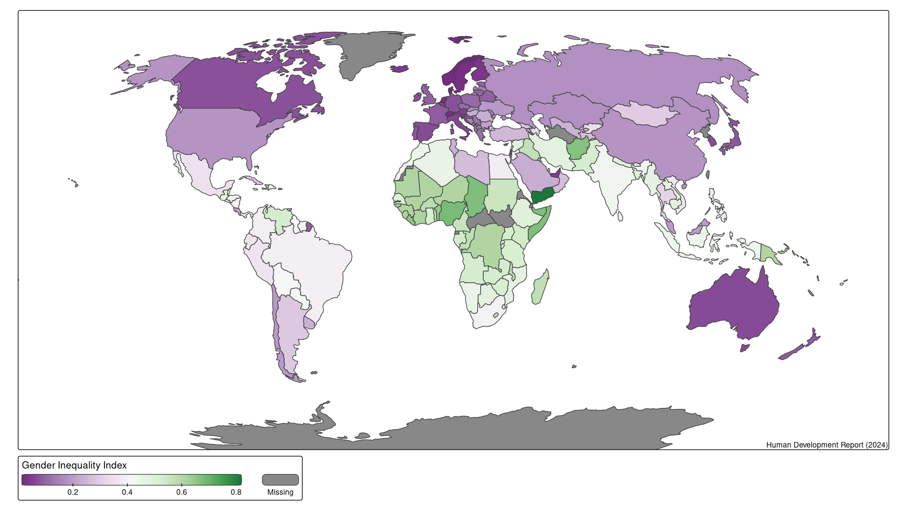

Static maps (plot mode)
Maps in plot mode van be exported in many formats including:
pixel based png, jpg, bmp, tiff.
vectorized pdf, eps, svg, and
The width and height are specified in either pixels or inches (you can don’t need to specify the units).
For the pixel based formats, the relation between pixels and inches are specified via the argument dpi (dots-per-inch).
Let’s create a standard country level choropleth:
tm = tm_shape(World, crs = "+proj=robin") +
tm_polygons(
fill = "gender",
fill.scale = tm_scale_continuous(values = "pu_gn"),
fill.legend = tm_legend("Gender Inequality Index", orientation = "landscape")) +
tm_credits("Human Development Report (2024)", position = c("RIGHT", "BOTTOM")) +
tm_layout(inner.margins = c(0, 0, 0.05, 0.05))Pixel based format
Exporting maps is done via tmap_save().
tmap_save(tm, filename = "world.png", width = 7, height = 4, dpi = 300)
#> Map saved to world.png
#> Resolution: 2100 by 1200 pixels
#> Size: 7 by 4 inches (300 dpi)Values of width and height less than 50 are considered inches, whereas greater than 50 pixels are considered pixels:
tmap_save(tm, filename = "world.png", width = 2100, height = 1200, dpi = 300)
#> Map saved to /home/runner/work/tmap/tmap/vignettes/world.png
#> Resolution: 2100 by 1200 pixels
#> Size: 7 by 4 inches (300 dpi)Therefore, both examples result in the exactly the same file:

Vector based formats are preferred over pixel based, because of the scalability. In case pixel formats are used, please make to use a sufficient number of pixels. For web publications at least 144 dpi is required. This may seem overkill, but is required for retina (high point-per-inch) displaces. For printing 300 or even 600 dpi is required.
Aspect ratio
In case only one dimension is provided, the other dimension calculated using the aspect ratio of the map.
tmap_save(tm, filename = "world.png", width = 2100, dpi = 300)
#> Map saved to /home/runner/work/tmap/tmap/vignettes/world.png
#> Resolution: 2100 by 1059.87 pixels
#> Size: 7 by 3.5329 inches (300 dpi)
Vector based format
Vector based formats will look (almost) the same.
tmap_save(tm, filename = "world.pdf", width = 7, height = 4, dpi = 300)Small differences in font sizes, margins, symbol sizes between formats may occur.
Scaling
An important argument of tmap_save() is scale. It an option for the overall scale over the map, which is normally set via tm_layout(). It determines all font sizes, line widths, and symbol sizes.
Much smaller (0.5):
tmap_save(tm, filename = "world.png", width = 7, height = 4, dpi = 300, scale = 0.5)
A bit smaller (0.8):
tmap_save(tm, filename = "world.png", width = 7, height = 4, dpi = 300, scale = 0.8)
A bit larger (1.2):
tmap_save(tm, filename = "world.png", width = 7, height = 4, dpi = 300, scale = 1.2)
Much larger (1.5):
tmap_save(tm, filename = "world.png", width = 7, height = 4, dpi = 300, scale = 1.5)#> [plot mode] fit legend/component: Some legend items or map compoments do not
#> fit well, and are therefore rescaled.
#> ℹ Set the tmap option `component.autoscale = FALSE` to disable rescaling.
View mode
Maps can also be exported as stand-alone HTML files.
tmap_save(tm, filename = "index.html", selfcontained = FALSE)When selfcontained = FALSE, the required JavaScripts and CSS files are stored in a folder called index_files.